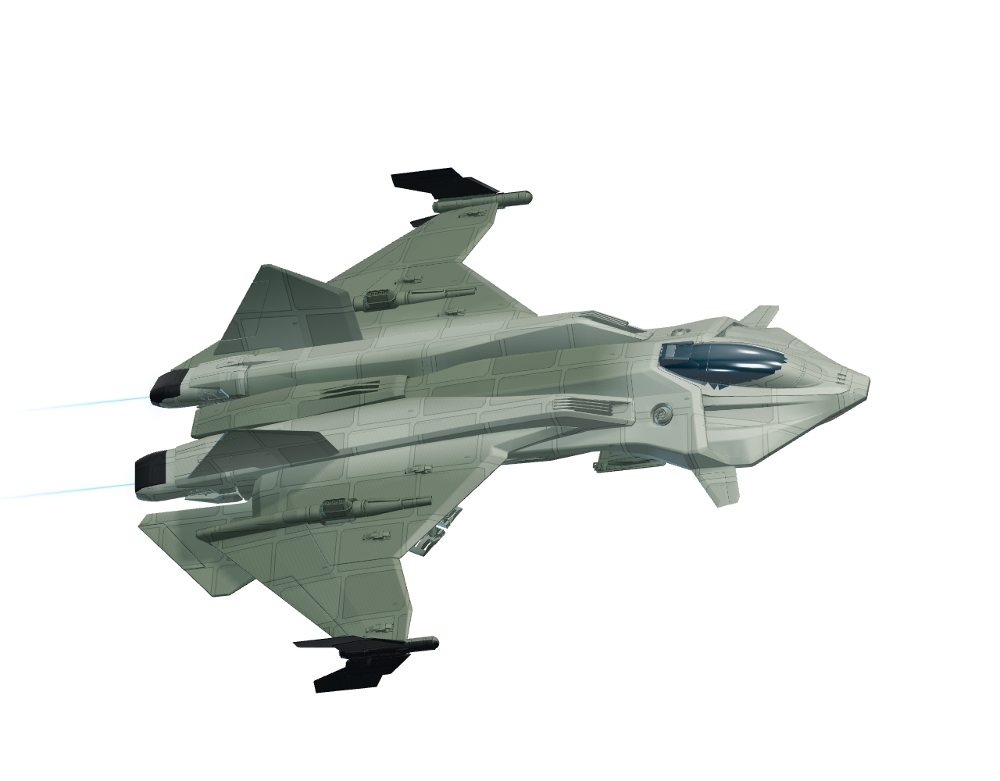

Voyager VersusV2.20.6
Your viewers are the pilots. Chat is the controller.
Loading RSI ship meshes…


CALLING FOR A CHALLENGER
One pilot is ready. Who will answer the call?

Awaiting pilotINTERCEPTOR!versusThe next viewer claims the second seat · 10-second launch countdownACTIVE PILOTS · TYPE IN CHAT
!firePulse laser · 2s recharge!missileHeavy hit · 10s recharge!shieldShield boost · 12s recharge!dodgeEvade fire · 9s rechargeCommand your ship
ACTIVE PILOTS ONLYTest a chat command
Send !versus as pilot_one, then pilot_two to test the challenger splash and countdown.
Choose your fighter
TYPE !SHIP BEFORE JOINING!shield; hull damage is permanent for the round.Pilot rankings
| RANK | PILOT | WINS | LOSSES | DRAWS | WIN RATE |
|---|
Preview only · pilot rankings sync from the local host.
Show these rankings in Voyager Control → Live dashboard → Pilots → Show in OBS. Stored on the host PC. Demo and simulated battles are excluded. Live winners earn 50 Voyager points; runners-up earn 0. Rewards require the Streamer.bot action in Stream setup. Draws and cancelled matches receive no points.
Voyager Versus rewards & history repair
50 POINTS / WIN · 0 / RUNNER-UPCheck the saved battle history against Streamer.bot, then credit unpaid wins at 50 points each. Runner-up entries become 0 points. Existing confirmed payments are counted; higher payments are shown separately and are not automatically deducted.
This uses your existing persisted Twitch points balances. Original amounts and receipts are retained for the audit. Training battles never earn points.
Start the local Voyager launcher and connect Streamer.bot to check history.
| Pilot / saved reward | Outcome | Original | Revised | Recorded paid | To add | Verification |
|---|---|---|---|---|---|---|
| Check saved history to load your payouts. | ||||||
“Recorded paid” includes legacy receipts, which the old code did not verify against the resulting balance. If one is incorrect, use Review unpaid claim and document the evidence. A verified v2 payment cannot be paid twice. The battle leaderboard alone is not used to invent missing payouts.
Connect Streamer.bot
TWITCH CHATUse the local launcher to connect your chat and OBS. This hosted version is a playable preview.
Start Streamer.bot's WebSocket Server under Servers/Clients. Chat commands work directly. Install the v2.5 action below for Voyager payouts and availability announcements. Only Twitch chat is supported in this version.
OBS browser source
UP TO 3840 × 2160Run the launcher on the PC running OBS. Add a Browser Source using this URL, with “Local file” unchecked.
Always transparent. Ships, text, logos and effects float over your stream. No background, panels or scene frame.
Updates the OBS URL below. Copy it into OBS after changing quality.
For 4K output, use a 3840 × 2160 source and Ultra quality. Start at 30 FPS; try 60 FPS if your GPU has headroom. 1920 × 1080 and ultrawide canvases are also supported. Keep the launcher running; you can close the control-panel tab.
OBS cooldown timer
640 × 240A separate, fully transparent timer for the next live battle call. Uses the host’s saved 45-minute cooldown.
Add a second Browser Source at 640 × 240, with Local file unchecked. It shows READY when a new call is available, and an on-hold message if chat or the arena is unavailable. Refreshing OBS never resets the timer.
Preview timer ↗The preview is labelled and does not affect the game. Use the URL above in OBS for live state.
Versus ready alert
AUDIO + TRANSPARENT BANNERYour “Are You Ready” audio and the !versus banner play automatically once when Versus becomes ready and Twitch chat is connected. The chat announcement is sent separately, so a delayed confirmation cannot block the animation.
Use your existing versus onv Browser Source at 1000 × 320, 60 FPS. Keep its eye icon on in the active scene. Turn on Control audio via OBS. Leave Local file, Shutdown source when not visible, and Refresh when scene becomes active off. The source stays transparent until a new announcement.
Preview with audio ↗The OBS test plays this banner and audio only. It does not post chat, reset cooldowns or change points.
Only the OBS source plays automatic audio. Keep the source visible and loaded before the next ready message. The banner hides itself after 12 seconds. Refreshes and old announcements do not replay. If silent, check the source mixer or press D in OBS Interact for diagnostics.
Voyager rewards
PERSISTED BALANCESImport Voyager-Versus-Rewards-Install.sb in Streamer.bot, compile the new Voyager Versus Rewards v2.5 action and keep its dedicated queue unpaused. Disable older Versus rewards actions. The v2.5 action retains your existing payment receipts and chat announcements.
↓ Import rewards action C# code Setup instructions ↗Checks action execution and the points field. Makes no test payment.
Ready and match chat: enabled for the local host with the updated C# action. Preview mode does not post to Twitch.
Payments are added to each pilot’s existing Voyager balance. Training, draws, cancellations and pre-launch forfeits receive no rewards.
Live battle call ready · 45-minute global cooldown.
Per-stream entries
ONE OF EACH ROLEEach viewer can initiate one battle and join as challenger once per stream, in either order. Rejected attempts and training do not count. Accepted calls remain used after cancellation or leaving.
New Twitch stream events reset these limits automatically while connected. If Voyager missed the start, use this button once before accepting entries. Restarting Voyager keeps the current limits. This does not reset the global cooldown, points or rankings.
| VIEWER | INITIATOR | CHALLENGER |
|---|---|---|
| No entries recorded in this session. | ||
Battle rules
Auto-fire deals 8 damage and uses no energy, keeping combat moving through chat latency. Viewers' commands add stronger attacks. Energy regenerates at 8 per second. Timeouts compare remaining hull + shield; equal totals draw.
Ready for your stream
01 Download and extract the game package.
02 Install Node.js 22.4 or newer, then run START-VOYAGER.bat.
03 Install the rewards action and connect Streamer.bot in the local panel.
04 Add the OBS source, then ask two viewers to type !versus.